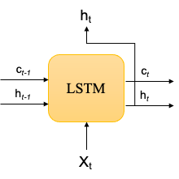
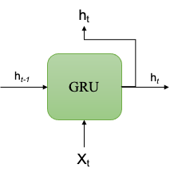
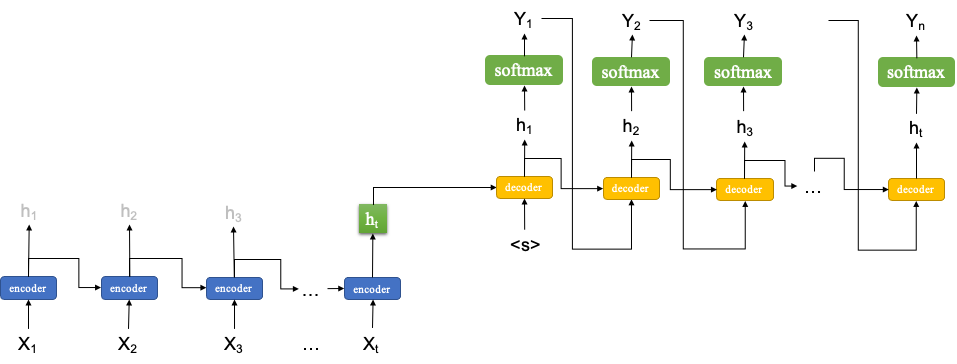
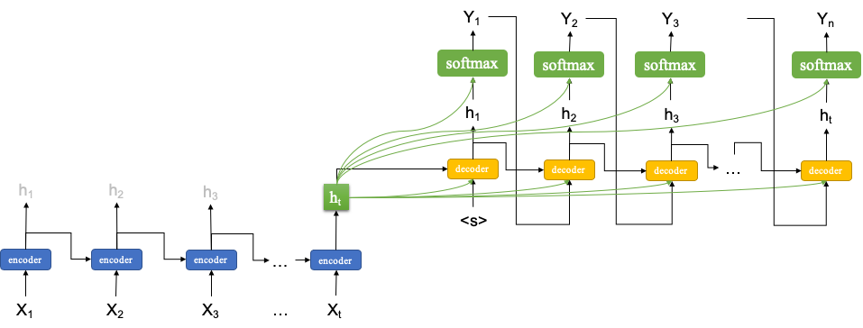
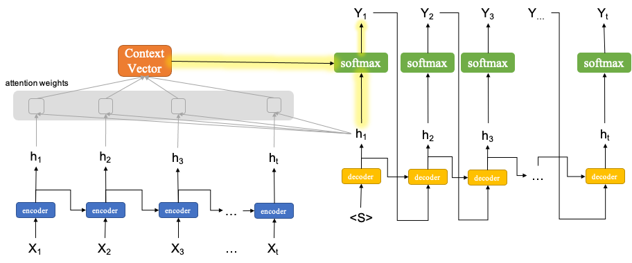

Intutions for Types of Sequence-to-Sequence Models¶

LSTM vs GRU¶
 
Possible solutions to the issues of vanishing gradients
Better modeling of long-term relationships
GRU is a simpler version of LSTM, rendering it easier to train computationally
Simple Sequence-to-Sequence Model¶

A schematic model representation of many-to-many sequence model
The input and output sizes can be different
A typical task is machine translation
Two sequence models need to be trained: encoder and decoder
Encoder:
A vanilla version of the seq-to-seq model takes the last return state \(h_t\) of the encoder as the initial and only input for the decoder
If the encoder uses the LSTM cell, the output of the encoder would be the last return state and the last memory cell, i.e., \(h_t\) and \(c_t\)
Decoder
During the training stage, the decoder takes the previous return state \(h_{t-1}\) and the current \(Y_t\) as the input for the LSTM (concatenated). This is referred to as teacher forcing.
During the testing stage, the decoder would decode the output one at a time, taking the previous return state \(h_{t-1}\) and the previous return output \(Y_{t-1}\) as the inputs of the LSTM (concatenated). That is, no teacher-forcing during the testing stage.
Peeky Sequence-to-Sequence¶

A variant of the seq-to-seq model, which makes available the last return state \(h_{t}\) from the encoder to every time step in the decoder.
An intuitive understanding of this peeky approach is that when decoding the contexts from the source input should be made available to all decoding steps.
Sequence-to-Sequence with Attention¶

Attention mechansim can be seen as much more sophisticated design of the peeky approach.
The idea is that during the decoding stage, we need to consider the pairwise relationship (similarity) in-between the decoder state \(h_{t}\) and ALL the return states from the encoder.
An intuitive understanding is as follows. When decoding the translation of \(Y_{1}\), it is very likely that its translation is more relevant to some of the input words and less relevant to the others.
Therefore, the attention mechanism first needs to determine the relative pairwise relationship in-between the decoder \(h_{1}\) and all the encoder return states in order to get the attention weights.
There are many proposals regarding how to compute the attention weights. Please see a very nice review of Lilian Weng’s Attention? Attention!.
In the current Tensorflow implementation, there are three types of Attention layers:
AdditiveAttention Layer: Bahdanau’s style attention Bahdanau2015
Attention Layer: Luong’s style attention Luong2015
MultiHeadAttention Layer: transformer’s style attention “Attention is All you Need” (Vaswani, et al., 2017)
With the attention weights, we can compute a context vector, which is like a weighted sum of the encoder return states.
We then use this weighted sum, along of the decoder return state \(h_{1}\), to compute the final output \(Y_{1}\).
This attention-mediated mechanism applies to every time step in the decoder.